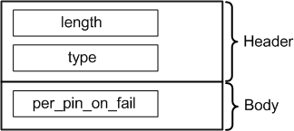

PerPinOutputOnFailAttrType
Contains a string representing the state for the "Per Pin On Fail" flag of a particular test suite. The data type is DRLPerPinOutputOnFailAttr.

Field Name |
Data Type |
Description |
Comments |
|---|---|---|---|
length |
int |
Attribute length |
These fields form the attribute header. |
type |
short |
Attribute type |
|
per_pin_on_fail |
string |
State for the "Per Pin Output On Fail" flag of the particular test suite. Possible values are "Enable" or "Disable" |
|
Functional changes
- Introduced before SmarTest 6.3.2